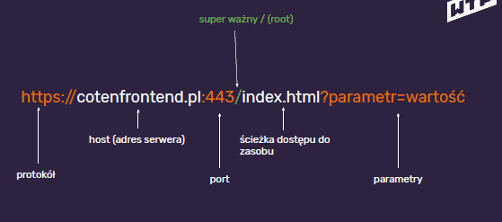

Kanban
KANBAN po japońsku znaczy spis widoczny
Metoda ta pozwala na organizację pracy. Opiera się na podziale na 3 kolumny czasami na więcej, a
te kolumny to:
-
TODO = do zrobienia
-
DOING = w trakcie
-
DONE = zrobione
Może być jeszcze więcej kolumn:
-
Testing - testowanie
-
inReview - do przejrzenia
Kanban - podsumowanie metody:
-
Ułatwia śledzenie postępu prac / nauki
-
Zalecane trzymanie jednego zadania w "doing"
-
Dobrze opisuj "definition of done"
-
Można stosować offline
-
Online za darmo możesz przygotować swoją tablicę na trello.com
Jak działa internet i przeglądarka?
Przeglądarki korzystają z protokołu HTTP (w większości przypadków). Dzięki niemu mogą pobrać
wszystkie pliki i je wyświetlić na ekranie monitora.
HTTP to w rozwinięciu Hypertext Transfer Protocol czyli jest to protokół do transportowania
html'a i całej reszty.
Jest też coś takiego jak HTTPS czyli Hypertext Transfer Protocol Secure i jest on
bezpieczniejszy, ponieważ jest szyfrowanym protokołem. TO jest "połączenie z kłódką". Jest
rekomendowane żeby wszędzie korzystać z tego protokołu. Zasada działania jest praktycznie taka
sama jak HTML.
URL czyli Uniform Resoure Locator czyli adres, który wpisujemy.

Co się dzieje w momencie wpisywania adresu strony w przeglądarce?
- wpisuję w pasku adresu cotenfronted.pl
[enter]
- przeglądarka szuka serwera cotenfronted.pl
[DNS]
- po znalezieniu serwera odpytuje go o index (jeśli podamy sam adres
serwera) - to co jest indexem zależy od konfiguracji serwera (nie musi to by c index.html,
choć w przypadku stron statycznych jest to najczęstszy przypadek)
- serwer wysyła do przeglądarki zawartość html
- przeglądarka wczytuje html i szuka wszystkich dodatkowych zasobów: style,
skrypty, obrazki itp. i dla każdego z zasobów wykonuje zapytanie
- przeglądarka parsuje i renderuje stronę
Komunikacja między serwerem, a przeglądarką jest w modelu request - response (zapytanie -
odpowiedź). Czyli przeglądarka o coś pyta serwer, a ten wysyła jej informację zwrotną.
Narzędzia deweloperskie w Chrome'ie dają nam możliwość podejrzenia jak funkcjonuje komunikacja
między przeglądarką, a serwerem. Możemy to podejrzeć w zakładce network. Widać tam co się w
jakim momencie ładowało w przeglądarce. 🙂
Kody odpowiedzi HTTP:
- 200 - OK, gdy dany zasób znajduje się na serwerze
- 30x - szukasz w złym miejscu - przekieruję Cię w dobre (bo wiem gdzie)
- 404 - nie mam tego czego potrzebujesz. Sorry
- 50x - Nie czuję się najlepiej. Błąd wewnętrzny serwera.
Czym jest root (/)?
"/" mówi nam, którym miejscu przeglądarka musi szukać zasobu. Ma on znaczenie przy odwołaniu do
ścieżki względnej i niewzględnej. Czyli w odwołaniu do obrazka przed lokalizacją obrazka użyjemy
/ (np. src="/img/wtf.svg") to on się zawsze otworzy, Bez względu na to czy będziemy wchodzić
przez stronę główną lub podstronę. Jest to odwołanie bezwzględna.
Jeśli przed lokalizacją obrazka nie użyjemy "/" (np. src="img/wtf.svg") to obrazek otworzy się
tylko wchodząc przez stronę główną. Dzieje się tak ponieważ w drugim przypadku ścieżka jest
dopisywana do podstrony i szuka wtedy przeglądarka pliku w złym miejscu.
Tworząc stronę uruchamianą "z dysku" pomijamy używanie slasha z przodu.
Posumowanie:
- protokół który obsługuje strony internetowe i ich zawartość to HTTP
(aktualnie coraz częściej HTTP/2)
- komunikacja przeglądarka - serwer odbywa się na zasadach request -
response
- odpowiedzi serwera mają różne kody (i pozwala nam to na diagnozowanie
problemów)
- root (/) jest istotną częścią ścieżek do zasobów (i dobrze wiedzieć jak
działa 🙂 )
WTF: Terminal
Każdy z systemów operacyjnych posiada swój terminal. MacOs i linux mają terminale bardzo
podobne, a Windows ma swój poleceń, który trochę odstaje od terminali z innych systemów. W
szkoleniu WTF: Co ten frontend poznajemy obsługę wszystkich tych terminali, z różnych systemów.
Przed przystąpieniem do pracy w terminalu trzeba skonfigurować VSC, tak aby mógł dobrze
współpracować z terminalem. Pomocna w tym będzie poniższa komend, którą trzeba będzie wpisać po
kliknięciu ctrl+shift+p:
Shell Command: Install 'code' command in PATH
Żeby odpalić terminal na Windzie wchodzimy w menu Start i zaczynamy wpisywać cmd. Otworzy
się nam wiersz poleceń (Windowsowy odpowiednik terminala) i możemy już kontynuować pracę z
terminale używając poniższych komend.
-
cd C:\ - przejście do głównego katalogu na dysku C,
-
dir - wypisanie zawartości katalogu.
-
cd .. - przejście do katalogu wyżej,
-
cd nazwa-katalogu - przejście do katalogu o nazwie
nazwa-katalogu,
-
code . - uruchomienie visual studio code w aktualnym katalogu,
-
cd - wyświetlenie aktualnej ścieżki,
-
mkdir nazwa-katalogu - stworzenie katalogu o nazwie
nazwa-katalogu
Żeby odpalić terminal an Mac'u wciskamy kombinację klawiszy command+spacja. Otworzy się okno
o nazwie spotlight search i wpisujemy: terminal. Otworzy się nam terminal i możemy już
kontynuować pracę z terminale używając poniższych komend.
-
cd ~ - przejście do głównego katalogu na dysku C,
-
ls - wypisanie zawartości katalogu.
-
cd .. - przejście do katalogu wyżej,
-
cd nazwa-katalogu - przejście do katalogu o nazwie
nazwa-katalogu,
-
code . - uruchomienie visual studio code w aktualnym katalogu,
-
pwd - wyświetlenie aktualnej ścieżki,
-
mkdir nazwa-katalogu - stworzenie katalogu o nazwie
nazwa-katalogu
Żeby odpalić terminal na Linux'ie wybieramy Terminal w Odpalaczu aplikacji. Otworzy się nam
terminal i możemy już kontynuować pracę z terminale używając poniższych komend.
-
cd ~ - przejście do głównego katalogu na dysku C,
-
ls - wypisanie zawartości katalogu.
-
cd .. - przejście do katalogu wyżej,
-
cd nazwa-katalogu - przejście do katalogu o nazwie
nazwa-katalogu,
-
code . - uruchomienie visual studio code w aktualnym katalogu,
-
pwd - wyświetlenie aktualnej ścieżki,
-
mkdir nazwa-katalogu - stworzenie katalogu o nazwie
nazwa-katalogu